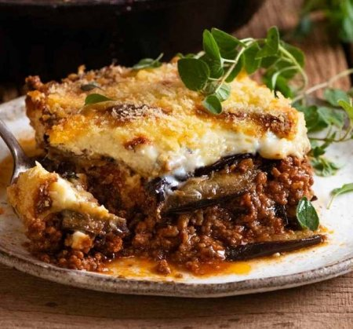

Moussaka

Description
So what is Moussaka? Moussaka is a traditional Greek eggplant casserole made with baked or pan fried eggplants (aubergines) and potatoes, a rich, tomatoey beef or lamb mince sauce and topped off with a deliciously creamy bechamel sauce. In other words, the ultimate comfort food.
Ingredients
For the vegetables
- 3 potatoes
- 2 zucchinis, medium
- 2 eggplants
- salt
- pepper
For the ground meat
- 1 onion
- 2 tablespoon(s) olive oil, for sautéing
- 1 clove(s) of garlic
- 1 tablespoon(s) thyme
- 3 pinches granulated sugar
- 1/2 teaspoon(s) cloves
- 1 level teaspoon(s) cinnamon
- 1 tablespoon(s) tomato paste
- 500 g ground beef
- 400 g canned tomatoes
- salt
- pepper
- 1/2 bunch parsley
- 1/2 bunch basil
For the bechamel sauce
- 100 g butter
- 100 g all-purpose flour
- 750 ml whole milk
- salt
- pepper, ground
- 1 pinch nutmeg, ground
- 100 g parmesan cheese, grated
- 3 egg yolks
Execution Steps
For the ground meat
- Place a pot over high heat and add the olive oil.
- Coarsely chop the onion and add to pan.
- Finely chop the garlic and add to pan along with thyme, cloves, cinnamon and sugar. Sauté for 2-3 minutes until they caramelize nicely.
- Add the ground meat and break it up with a wooden spoon. Sauté until golden brown.
- Add the tomato paste and sauté so that it loses its bitterness.
- Add the chopped tomatoes, lower heat and simmer for 5-10 minutes until the sauce thickens.
- Remove from heat and add the parsley and coarsely chopped basil. Season with salt and pepper.
For the bechamel sauce
- Place a pot over medium heat.
- Add the butter and let it melt.
- Add the flour and whisk until it soaks up all of the butter.
- Add the milk in small batches while continuously whisking so that no lumps form.
- As soon as the bechamel sauce thickens and bubbles start to form on the surface, remove from heat.
- Add the nutmeg, salt, pepper, 100 g parmesan and 3 egg yolks. Whisk thoroughly.
to assemble
- Preheat oven to 180* C (350* F) Fan.
- In a 25x32 cm baking pan, spread a layer of potatoes, cover with a layer of eggplants and top with a layer of zucchini. Season in between layers.
- Add 2-3 tablespoons of bechamel sauce to the ground meat mixture and mix. Spread the ground meat over the vegetables.
- Cover with the bechamel sauce, spreading it evenly and sprinkle with 50 g of grated parmesan.
- Bake for 35-40 minutes.
- When ready, remove from oven and allow to cool.
- Serve with fresh herbs and olive oil.
Back